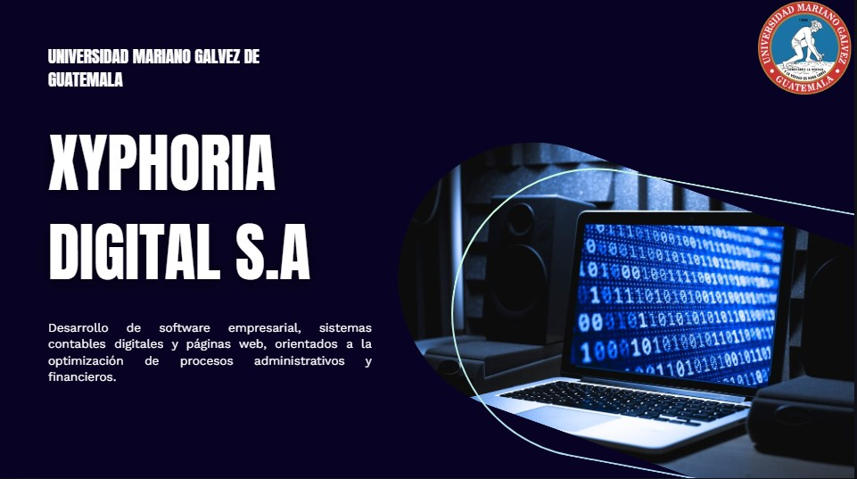
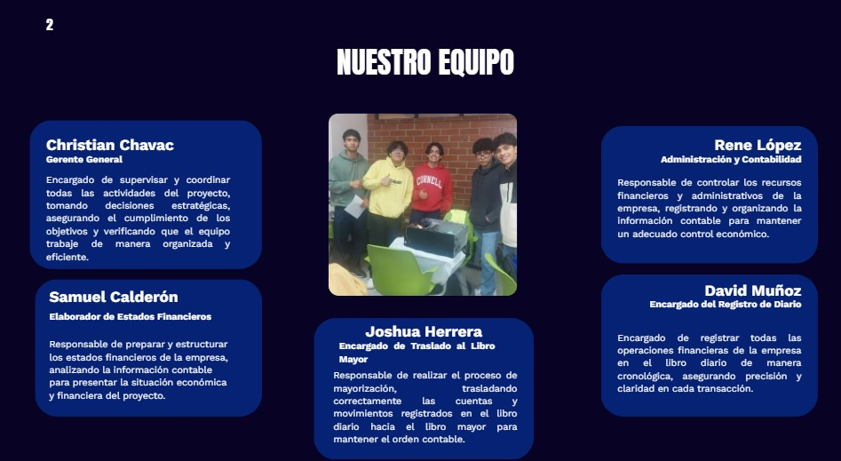
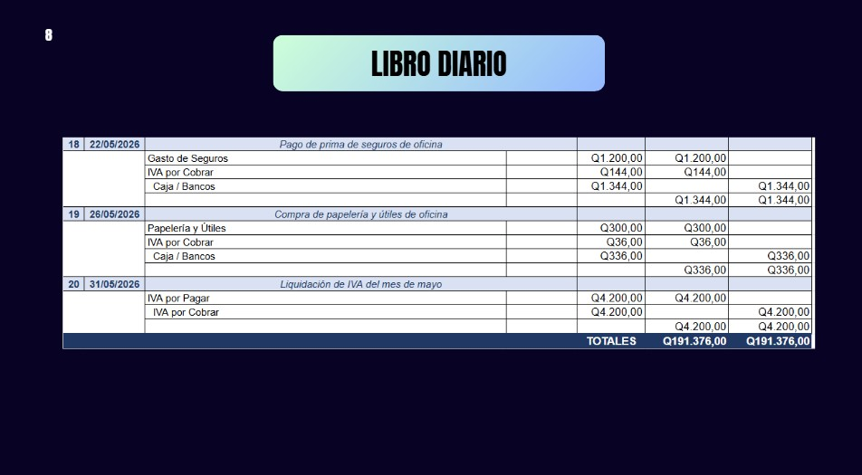

Proyecto: Xyphoria Digital
El curso de Contabilidad I permitió conocer los fundamentos básicos del registro y control de operaciones financieras dentro de una empresa. A través de esta asignatura se aprendió la importancia de organizar la información económica para comprender mejor la situación financiera de un negocio.
La contabilidad es una herramienta fundamental porque permite registrar, clasificar y resumir las operaciones que realiza una empresa. Esto ayuda a tomar decisiones, controlar ingresos y egresos, analizar resultados y mantener orden financiero.
El proyecto desarrollado en esta asignatura fue una simulación contable basada en una empresa ficticia de tecnología llamada "Xyphoria Digital". La empresa fue planteada como una Sociedad Anónima dedicada a la venta de software y servicios tecnológicos.
El propósito del proyecto fue aplicar los conocimientos contables aprendidos en clase dentro de una situación práctica. Para ello, se trabajaron operaciones correspondientes al período del 1 al 31 de mayo, simulando movimientos financieros de una empresa real.
Durante el proyecto se realizaron diferentes registros contables, incluyendo operaciones en el libro diario, traslado al libro mayor y elaboración de balances. También se trabajaron minutas, registros de actividades y una presentación en Canva para explicar el funcionamiento de la empresa.
El libro diario permitió registrar las operaciones en orden cronológico, identificando las cuentas afectadas y aplicando el debe y el haber. Luego, el libro mayor permitió organizar los movimientos por cuenta para observar sus saldos y comportamiento durante el período.
También se trabajó la clasificación de cuentas, lo cual fue importante para comprender la diferencia entre activos, pasivos, capital, ingresos, gastos, pérdidas y ganancias. Esta parte ayudó a relacionar cada operación con su efecto dentro de la empresa.
El objetivo principal fue aplicar los conocimientos contables en una empresa simulada para comprender el registro y control de operaciones financieras dentro de un negocio tecnológico.
También se buscó reforzar la comprensión del debe y el haber, la clasificación de cuentas, la elaboración del libro diario, el libro mayor y la interpretación general de los movimientos económicos.
Este proyecto fue importante porque permitió practicar la contabilidad de una forma más cercana a la realidad. En lugar de estudiar solamente conceptos, se aplicaron dentro de una empresa ficticia con operaciones, registros y documentos organizados.
Además, el proyecto permitió comprender que la contabilidad requiere orden, precisión y revisión constante. Un error en una cuenta, cantidad o clasificación puede afectar todo el resultado del ejercicio.
Este proyecto permitió comprender mejor la clasificación de cuentas, el registro de operaciones financieras y la elaboración de ejercicios contables como libro diario, libro mayor y balances.
También ayudó a fortalecer el trabajo en equipo, la organización y la interpretación de movimientos económicos dentro de una empresa. Al tratarse de un proyecto grupal, fue necesario coordinar tareas y presentar la información de manera ordenada.
A nivel personal, el proyecto permitió reforzar la explicación del libro mayor, especialmente el debe y el haber. También permitió identificar áreas que todavía necesitan práctica, como explicar de forma más segura la parte de pérdida, ganancia, activo y pasivo.
Durante este proyecto se desarrollaron habilidades como registro de operaciones contables, uso del debe y haber, elaboración del libro diario, elaboración del libro mayor, clasificación de cuentas, organización de información financiera y trabajo con una empresa ficticia.
Estas habilidades son útiles porque permiten comprender cómo se organiza la información económica dentro de una empresa y cómo los registros contables ayudan a mantener un mejor control financiero.
Las siguientes imágenes muestran evidencias del proyecto, incluyendo partes de los registros, presentación y documentación contable.



En el siguiente video se explica el proyecto de Xyphoria Digital, el propósito de la empresa ficticia y los procesos contables realizados durante la actividad.
El proyecto de Contabilidad I permitió aplicar conocimientos básicos en una simulación empresarial. A través de Xyphoria Digital se comprendió mejor cómo registrar operaciones, clasificar cuentas y organizar información financiera.
Esta experiencia fue útil porque ayudó a relacionar la teoría con la práctica y a reconocer la importancia del orden contable dentro de cualquier empresa. También permitió reforzar habilidades de trabajo en equipo y presentación de información.